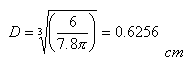
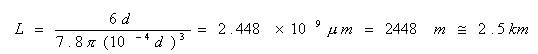
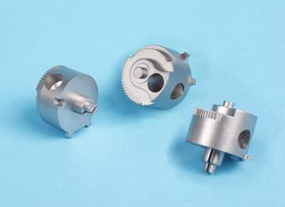
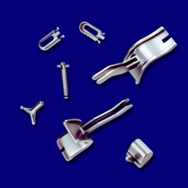
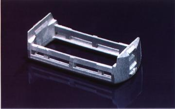
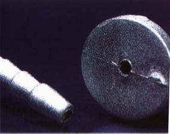

|
Sinterlemedeki
Sürpriz:
Gelin
1 gr paslanmaz çelik tozunu sinterleyelim. Toz çapý
d=10 mikron olan küresel taneciklerden meydana gelsin
ve yoðunluðu ?=7.8 gr/cm3 olsun. Bu taneciklerin týpký
bir tesbihteki boncuklar gibi birbirine deðecek þekilde
yanyana ve üstüste dizildiðini varsayalým. Çelik tozunu
ýsýtmaya baþladýðýmýzda sýcaklýðýn yeterince yükselmesiyle
birlikte taneciklerin merkezleri arasýndaki uzaklýðýn
küçüldüðünü ve birbirleri ile kaynaþtýklarýný (sinterlendiklerini)
görürüz. Eðer sýcaklýk arttýrýlmaya devam edilir ve
tanecikler arasýndaki sürtünme ihmal edilirse, sonuçta
tek bir paslanmaz çelik küre tanesi elde edilir. Bu
tanenin çapý aþaðýdaki formülle hesaplanýr:

D
ayný zamanda ideal sinterlenme ölçüsüdür ve taneciklerin
arasýndaki boþluklarýn tamamen kapandýðý durumu göstermektedir.
Buraya kadar herþey normal gözükmektedir deðil mi? Ancak
gelin bir de baþlangýçtaki tesbihimizin uzunluðunu hesaplayalým:

Bu
hesaplama sinterleme esnasýnda meydana gelen inanýlmaz
kendini çekme özelliðini eðlenceli bir biçimde ortaya
koymaktadýr. Formüllerden de görüleceði gibi kendini
çekme (büzülme) miktarý partikül büyüklüðüne baðlý deðildir.
Bu nedenle MIM teknolojisinde yeþil parçalarýn bünyelerindeki
plastik baðlayýcýlarýn tane büyüklüðü büzülmeyi etkilemez.
Tek önemli faktör hammadde (karýþým) içerisindeki hacimsel
doluluk oranýdýr. |
Bir
sonraki aþama kalýp setinin oluþturulmasýdýr. Kalýp dizayný
ve yapýsýnýn MIM'e özel olmasýnýn haricinde kalýp imalatý
hemen hemen tüm yönleriyle plastik enjeksiyon kalýplarýna
benzemektedir.
Bu nedenle günümüzde tüm MIM kalýplarý, plastik enjeksiyon
kalýp üretimi konusunda eðitimli ve tecrübe sahibi olan profesyonel
kiþiler tarafýndan imal edilebilmektedir. Tabi ki bu kiþilerin
MIM konusunda ilave eðitim ve pratik yapmalarý da gerekecektir.
Bu ilave eðitimlerin en can alýcý kýsmý, MIM teknolojisindeki
büyük miktardaki kendini çekme (büzülme) faktörünün kalýp
setine yansýtýlmasýdýr. MIM konusuna yeni giren bir plastik
kalýp imalatçýsýna nihai parçanýn resmi verildikten sonra,
"parçanýn tüm ölçülerini %20 büyüterek kalýp setini imal et"
dendiðinde, yüzündeki hayret ve þaþkýnlýk dolu ifadeleri gözlemlemek
her zaman eðlenceli olmaktadýr.
Ýdeal
durumda sinterleme esnasýndaki büzülme oranýnýn hassas bir
biçimde bilindiði ve sabit kaldýðý kabul edilse bile (ki bu,
gerçekte çok nadir rastlanan bir durumdur), kalýp imalatçýsý
sadece belli bir yaklaþýklýkla kendisine verilen þekli kalýba
iþleyebilmektedir. Parça þekli nasýl olursa olsun veya parça
teknik resmi hiç hata içermese dahi kalýp seti kaçýnýlmaz
bir biçimde, kalýp imalatçýsýnýn tarzýna, bilgi ve deneyimlerine
baðlý olarak iþleme hatalarýna sahip olacaktýr. Kuþkusuz kalýp
imalatçýsýnýn MIM konusundaki eðitim ve tecrübesi ne kadar
fazla ise, kalýp setindeki iþleme hatalarýnýn büyüklüðü o
kadar az olacaktýr. Özetle her kalýp seti týpký bir parmak
izi gibi kendine özel iþleme hatalarýna sahiptir. Ýþleme hatalarýna
hammaddenin büzülme faktörünün belirlenmesinden kaynaklanan
hatalar da eklenince "toplam hata" bulunmuþ olur. Bu toplam
hata her kalýp seti için farklýdýr, hatta ayný kalýp seti
içerisindeki her bir kavite için birbirinden farklýdýr.
Sonuçta;
en iyi ihtimalle kalýp setindeki toplam hata bitmiþ parça
toleranslarýndan daha küçükse MIM parça uygun biçimde üretilebilir.
Diðer tüm durumlarda en azýndan üretim partisinin bir bölümü,
istenen spesifikasyonlarýn dýþýna çýkýlmýþ olacaðýndan reddedilecek
veya hurdaya ayrýlacaktýr. Hazýr hammadde kullanan ve hammadde
imalatçýsýnýn verdiði kendini çekme faktörünün doðruluðuna
güvenen MIM parça üreticileri için, bu durum kalýp setinin
ilave iþlemelerle tashih edilmesi anlamýna gelmektedir. Diðer
bir çözüm de sinterlenmiþ MIM parçalarýn talaþlý imalat metodlarýyla
yeniden iþlemeye tabi tutulmasýdýr. Tabi ki bu halde de MIM
teknolojisinin ekonomik olma avantajý ortadan kalkacakýr.
|

|

|
Þekil.4
- Hassas ve karmaþýk þekilli mini boyutlu MIM parçalar
|
Diðer
taraftan kalýp setinin tashih edilmesi iþlemi oldukça riskli
bir prosestir. Kalýp imalatçýsý için revizyon iþlemine ait
toleranslarýn çok dar olmasý kalýbý daha da kötü hale getirebilir.
Çoðu durumda düzeltme pasolarý tehlikeli bir biçimde birbirini
izler ve en kötü durumda kalýp seti komple kullanýlamaz hale
gelir. Konuyu daha iyi açýklayabilmek için gerçek hayattan
alýnma bir olayý inceleyelim ve konunun baþýnda deðindiðimiz
paslanmaz çelik saat gövdesi imal etmek için hazýrlanan MIM
kalýp setini ele alalým:
Hata
için çok az pay var!
Ticari
olarak hazýr hammadde kullanmaktayýz ve üretici tarafýndan
kendini çekme faktörü K=1.176±0.004 olarak verilmektedir.
Bunun doðru olduðunu kabul ettiðimizde büzülme faktörü 1.172
ila 1.180 arasýnda demektir. Þimdi kalýp imalatçýmýza kalýp
setini imal etmesi için kritik ölçülerden birini -örneðin
saat gövdesinin çapýný, D=32.00±0.05 mm olarak verelim. Buna
göre hedeflenen kalýp kavitesinin çapý Dt=32mm*1.176 = 37.632
mm olacaktýr. Kalýp imalatçýlarý mikron ile çalýþmamaktadýrlar,
hatta yüzdelikli (milimetrenin yüzde biri) deðerler bile kalýpçýlýkta
çok hassas kabul edilmektedir. Aksi halde kalýp imalatçýlarý
kýsa sürede iflas ederler. Bizim olayýmýzda kalýpçýmýza biraz
avans verelim ve onun MIM kalýp imalatýnda yeterince eðitimli
ve tecrübeli olduðunu kabul ederek, kalýbý
-0.032
mm toleransla imal edebileceðini kabul edelim. Bu halde gerçek
kalýp kavitesinin ölçüsü Dg=37.632-0.032 = 37.600 mm olacaktýr.
Þimdi
gerçek büzülme faktörünün 1.178 olduðu durumda kalýptan çýkacak
parça ölçülerine bakalým: Sinter sonrasý gövde çapý D1=37.600/1.178
= 31.918 mm olacaktýr. Ne oldu? Bozuk bir parça ürettik. Hadi
gelin, kendimizi çok þanslý kabul edelim ve kalýp imalatçýmýzýn
hiç bir iþleme hatasý yapmadan kalýbý tam istediðimiz ölçüde
yaptýðýný varsayalým. Bu halde sinter sonrasý parça çapý D2=37.632/1.178
= 31.946 mm olacaktýr. Hala bozuk parça üretmekteyiz.
Saat
gövdesi imalatý orta seviyede hassas kabul edilebilecek bir
parçadýr. Yukarýdaki hesaplamalardan da anlaþýlacaðý gibi
istenilen toleranslar içerisinde parça üretmek için kalýptaki
iþleme hatalarý sýfýr bile olsa, ihtiyacýmýz olan þey büzülme
faktörü 1.176±0.00184 olan bir hammaddedir. Paslanmaz çelik
hammadde için verilen 1.176±0.004 büzülme faktörü aðýrlýk
olarak; karýþýma konacak 1000 gr paslanmaz çelik tozu için
0,75 gr hata payý içerdiði anlamýna gelmektedir. Bu halde
bile saat gövdesi olayýmýzda istenilen toleranslara eriþmede
yetersiz kalmaktadýr.
Ticari
hammadde üreticileri eczacý deðillerdir. Küçük miktarlarda
ve hemen hemen hiç hata payý olmayan karýþýmlar üretmezler.
Daha da ötesi ürün boyutlarý küçüldükçe hata için marjlar
da küçülür ve imalat toleranslarý daha sýký hale gelir. Örneðin
mikro-hassas bir parça üzerindeki 0.050 mm'lik bir ölçü için
verilen ±0.005 mm'lik bir tolerans normal kabul edilebilir.
Ancak dünyadaki en iyi kalýp imalatçýsý dahi bu deðerleri
yakalayamayacaktýr. O halde çözüm nedir? Önceden hazýrlanmýþ
bir hammaddenin büzülme oranýný kontrol etmek ve ayarlayabilmek
ya da yeni bir hammadde hazýrlarken istenilen büzülme oranýný
hassas ve sürekli bir þekilde karýþýma uygulayabilmek bu nedenle
büyük bir ekonomik fayda saðlamaktadýr. Aslýnda bu, çok hassas
toleranslara sahip geliþmiþ mikro parçalarýn imal edilebilmesi
için bir önþarttýr.
Temel
kural oldukça basittir: Karýþýmýn içerisindeki hacimsel doluluk
oranýný deðiþtirmek suretiyle büzülme faktörü ayarlanabilir.
Karýþýmýn içerisindeki metal veya seramik tozu miktarý arttýrýldýkça
(baþka deyiþle baðlayýcý miktarý azaltýldýkça) büzülme oraný
düþer. Tersi durumda da artar.
|

|

|
Þekil.5
- MIM yöntemiyle imal edilmiþ bir traþ býçaðý kafasý
büyük bir parça deðildir, ancak hassas olmak zorundadýr
(solda). Hidrolik konnektör (saðda) ise 0.9 mm çapýnda
bir deliðe ve 0.2 mm et kalýnlýðýna sahiptir.
|
Bununla
birlikte gerçek hayatta durum; "daha fazla büzülme için baðlayýcý
ekle, daha az büzülme için toz (metal, seramik) ekle" kadar
basit deðildir, biraz daha karmaþýktýr. Herþeyden önce karýþýmýn
kompozisyonu hassas bir þekilde bilinmelidir ki gerekli deðiþikliklerin
ne þekilde yapýlabileceði tesbit edilebilsin. Bu ticari olarak
satýlan ve kullanýlmaya hazýr karýþýmlar için imkansýzdýr.
Zira genelde karýþým (hammadde) kompozisyonlarý ticari bir
sýr olarak saklanýr.
|